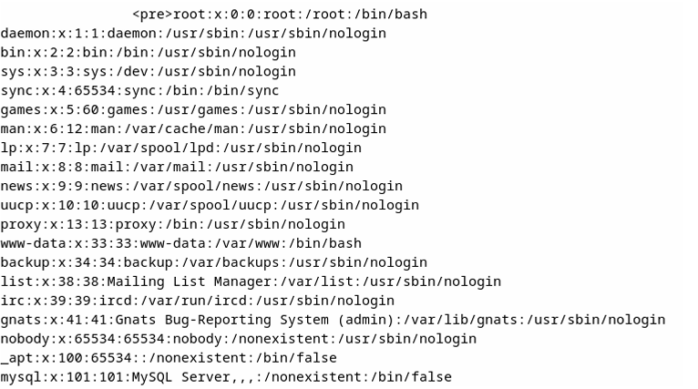

Audit Black Box d'une infrastructure conteneurisée et exploitation de vulnérabilités.

Dans un environnement simulé reproduisant une infrastructure d'entreprise, l'objectif était de réaliser un audit "Black Box" (sans information préalable) sur un réseau Docker segmenté. Ce réseau exposait un service de partage de fichiers (Samba) et une application web interne.
Le challenge principal résidait dans le mouvement latéral (Pivoting). Une fois entré dans le réseau, il fallait :
root sur l'ensemble des conteneurs.L'audit a permis de compromettre intégralement l'infrastructure (accès Root validé sur les 2 machines cibles). J'ai produit un rapport technique détaillant chaque étape de la "Kill Chain" et proposant des correctifs précis (patching Samba, restriction des droits Sudo, durcissement des configurations Docker).
Consulter le rapport complet (Anonymisé)